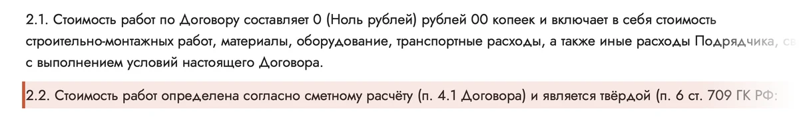

Шапка про «Дорого» — 10 вариантов
Первый экран главной для тех, кто сравнивает цены. Не спорим с цифрой и не говорим о других компаниях: показываем, что входит в цену, что сравнивать в любой смете и что человек получает. Источники — в описании каждого варианта.
Советую: 8 — честно, что в цене и что нет, прямо на первом экране; 2 — пять вопросов к любой смете: сравнение без спора; 3 — смета и пункт договора как доказательство.
Вопрос и ответ облачками
- Идея
- Вопрос клиента в белом облачке, ответ компании в оранжевом — три факта с номерами. Источники: «Пример сметы» (smeta-primer.html), п. 2.2 и 2.5 договора.
- Почему продаёт
- Человек узнаёт свой вопрос и сразу видит, как проверить цену. Ответ не спорит с цифрой, а даёт способ проверки: смета, твёрдая цена, работы сверх сметы только с подписью.
- Риск
- Слово «переплачиваю» напоминает о деньгах. Если покажется резким — «Из чего складывается цена?».
«Как понять, что я не переплачиваю?»
- 120+позиций в смете: материал, марка, количество и цена. Смету присылаем до договора
- п. 2.2Цена по этой смете в договоре твёрдая
- п. 2.5Работы сверх сметы — только по соглашению с вашей подписью
Итог с итогом или состав с составом
- Идея
- Слева привычное сравнение итоговых сумм, справа пять вопросов к любой смете и наши ответы. Источники: стратегия «Дорого» в vozrazheniya.md; «Как заказать», шаг 2; tools/inc/komplektacii.json; «Какие материалы мы используем»; п. 2.2 и 7.2 договора.
- Почему продаёт
- Не спорим и никого не называем — даём способ сравнить честно. Человек уносит вопросы с собой и задаёт их везде, а наши ответы уже на экране.
- Риск
- Пять строк — много для первого экрана. Можно оставить три: фундамент, утеплитель, цена.
Сравнивайте не итог, а состав
Итоговую сумму с итоговой суммой
Одинаковый состав — по пяти вопросам к любой смете
- Фундамент считали по грунту участка?У нас: инженер бурит пробную скважину и выдаёт акт
- Сколько миллиметров утеплителя?У нас: 150 мм в «Комфорте», 200 мм в «Премиуме»
- Каркас из доски камерной сушки?У нас: да, влажность доски 12–16 %
- Цена твёрдая или «уточним по ходу»?У нас: твёрдая по смете, п. 2.2
- Есть неустойка за срок?У нас: да, за просрочку по нашей вине, п. 7.2
Смета и договор на экране
- Идея
- Фрагмент сметы и вырезка договора с подсветкой п. 2.2. Источники: строки сметы на «Стамбул» 9 × 8 из smeta-primer.html, п. 2.2 договора. Вырезка — новый файл img/dogovor-p2-2-cena.webp.
- Почему продаёт
- Документ убеждает сильнее обещаний: видно, что цена — это список строк, а в договоре она определена по смете и твёрдая.
- Риск
- На вырезке в п. 2.1 видно «0 (Ноль рублей)» — это образец договора. Строки сметы — пример с сайта, количества у каждого дома свои.
Цена дома — не одна цифра, а смета от 120 строк
Смету присылаем до договора. В договоре цена определена по ней и является твёрдой — п. 2.2.
Полная смета — от 120 позиций

Цена в четырёх цифрах
- Идея
- Сочный оранжевый экран и четыре числа: 120+ позиций, 0 строк «прочие работы», проект за 40 000 ₽ в цене, доставка до 100 км. Источники: smeta-primer.html, п. 2.8 договора, примечание под таблицей цен в карточках (tools/inc/komplektacii.json, поле note).
- Почему продаёт
- Крупные цифры читаются за секунду и переводят «дорого» в «понятно, что входит». Каждая цифра проверяется.
- Риск
- «0» без подписи непонятен — подпись стоит рядом всегда, и на телефоне тоже.
Что стоит за ценой дома
От цены «от» до своей цены
- Идея
- Четыре шага: что значит «от», чем отличаются комплектации, как добавить опции и где цена закрепляется. Источники: цены «от» на главной равны «Холодному контуру» (сверено с tools/inc/prices.json), tools/inc/komplektacii.json, «Дополнительные опции» с итогом в карточке, п. 2.2 договора.
- Почему продаёт
- Снимает страх «потом окажется дороже»: видно, из чего складывается итог, и что бюджет подбирают составом дома, а не уговорами.
- Риск
- Шапка длиннее остальных. Фраза «цена «от» — это «Холодный контур»» без шагов 2–4 может разочаровать — показывать только целиком.
Как из цены «от» складывается цена вашего дома
Одна модель — три комплектации. Под свой бюджет вы выбираете состав дома.
- Цена «от»
Это «Холодный контур»: каркас, кровля, фасад, окна и входная дверь
- Комплектация
«Комфорт» добавляет утепление 150 мм и отделку внутри, «Премиум» — утепление 200 мм
- Опции
Электрика, трубы, покраска — отмечаете нужное, и карточка дома считает итог
- Ваша цена
Смета до договора. В договоре цена по ней твёрдая — п. 2.2
Готовые дома в роликах хозяев
- Идея
- Три настоящих ролика с главной и связка: какой получится дом — видно в роликах, из чего сложится цена — в смете. Источники: раздел «Отзывы» на главной (подписи дословно), smeta-primer.html.
- Почему продаёт
- Чужой опыт убеждает сильнее рекламы: человек видит, какой дом получают, и цена перестаёт быть отвлечённой цифрой.
- Риск
- Ролики не про цену — ни заголовок, ни подписи не должны обещать, что хозяева говорят о деньгах.
Какой дом вы получите — покажут хозяева
Ролики снимали сами клиенты после сдачи дома. А из чего сложится цена вашего — покажет смета до договора.
Проверьте сами — в офисе
- Идея
- Приглашение пройти смету и договор вживую и посмотреть доску для каркаса. Источники: слайд «Час в офисе» на главной («За встречу разбираем смету, договор и сроки»), «Как заказать», шаг 3, «Какие материалы мы используем», адрес и часы из подвала сайта.
- Почему продаёт
- Кто увидел материалы и прошёл смету построчно, сравнивает уже состав, а не итог. Встреча в офисе — самый короткий путь к договору.
- Риск
- Если менеджеры готовы разбирать сметы других компаний, можно добавить «Приносите чужую смету — сравним». Без решения владельца не писать.
Приезжайте разобрать смету построчно
За встречу пройдём смету и договор и покажем вживую доску, из которой собираем каркас.
Что в цене, а что нет
- Идея
- Два списка рядом и условие о твёрдой цене. Источники: примечание под таблицей цен в карточках, п. 2.1, 2.2, 2.5, 2.7 и 2.8 договора, «Дополнительные опции» и доставка в tools/inc/komplektacii.json.
- Почему продаёт
- Неожиданные доплаты — главная причина уйти с цены. Когда «не входит» названо сразу и с ценой, цифра перестаёт пугать: «дорого» превращается в «понятно, за что».
- Риск
- Список «не входит» легко раздуть мелочами из договора — вывоз мусора, электричество на время стройки. Добавлять их только по решению владельца.
Что в цене, а что нет — говорим до договора
- Материалы и все работы по сборке дома
- Погрузка, разгрузка и доставка до 100 км
- Проект дома за 40 000 ₽ — п. 2.8
- Электрика, трубы, вентиляция, покраска — опции с ценой в карточке дома
- Доставка дальше 100 км — по цене за километр
- Работы сверх сметы — только по соглашению с вашей подписью, п. 2.5
Цена по смете твёрдая (п. 2.2) и не изменится, если стройка начнётся в течение 4 месяцев после подписания (п. 2.7).
Проект дома уже в цене
- Идея
- Одна ценность крупно: проект дома за 40 000 ₽ входит в цену. Рядом цитата договора и ролик о конструктивном проекте. Источники: п. 2.8 договора (цитата дословно), «Конструктивный проект» (stroim-proekt.html).
- Почему продаёт
- Человек видит, что получает больше, чем ждал: к цене дома прилагается проект с расчётом нагрузок. И начинает спрашивать про это у других.
- Риск
- В том же п. 2.8: если заказчик откажется от договора, 40 000 ₽ не возвращаются. На вопрос отвечать прямо.
Проект дома за 40 000 ₽ — уже в цене
- Расчёт снеговых и ветровых нагрузок вашего региона
- Чертежи узлов, сечения и шаг стоек — бригада строит по чертежу
- Комплект документации передаём вам по акту
Договор · п. 2.8«В стоимость Договора включена работа по разработке архитектурно-проектной документации Объекта (проектирование, инженерная проработка и проверка конструктивных решений) стоимостью 40 000 (сорок тысяч) рублей»
Малая правка первого слайда
- Идея
- Нынешний слайд с террасой, меняются только слова: «по смете» вместо «от 26 дней» и новая строка вместо «Цена фиксируется договором и не меняется до сдачи». Источники: smeta-primer.html, п. 2.2 договора.
- Почему продаёт
- Самый быстрый шаг: дизайн привычный, а спорные фразы уходят — «от 26 дней» и «не меняется до сдачи» договор не подтверждает.
- Риск
- Слайды листаются, остальные экраны видят не все — поэтому довод о цене стоит в первом.
Каркасные дома под ключ по смете
Смета от 120 позиций — до договора. Цена по ней в договоре твёрдая.